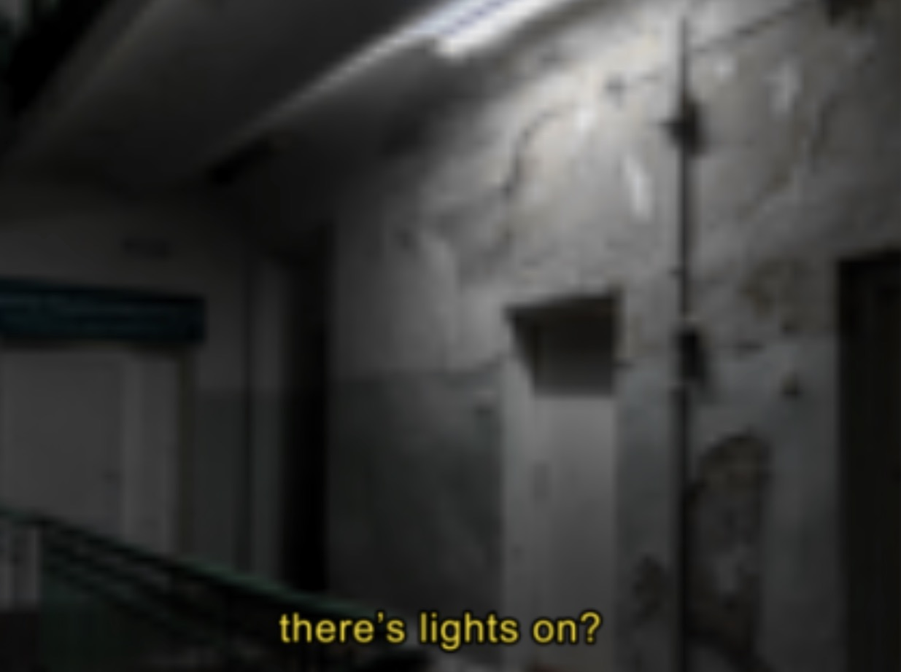
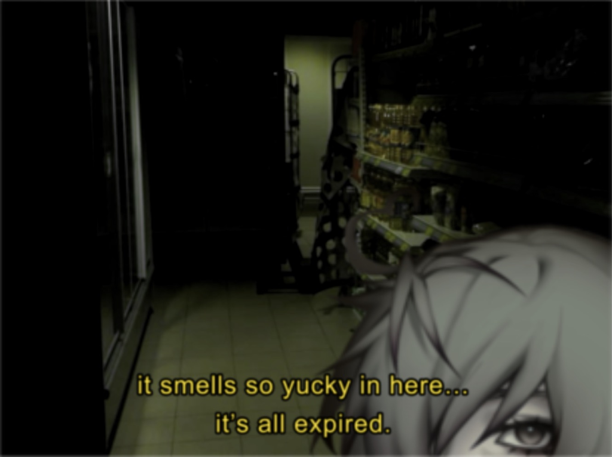
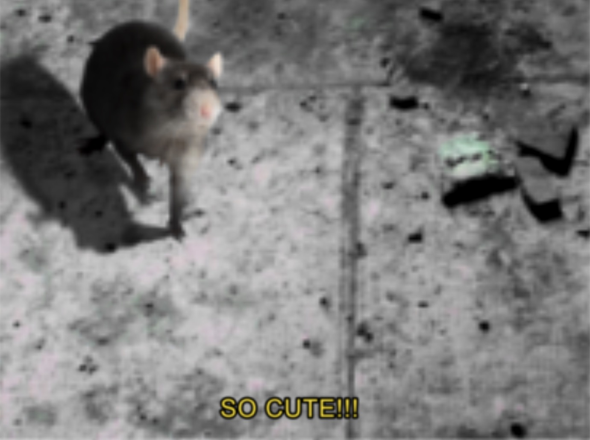

Archived on Abandoned-America.archive.net by b1tr4t
by the one and only CONNIE, the world's best urban explorer to ever live!!!
So... you ever heard of Porozhatgrad?! No?! Well then, you've come to the right place!!! Today's vlog is about this really beautiful dead town I found on the edge of the Barents Sea!!!
So, I'm gonna show y'all some areas I visited (or at least whatever I could endure before the stench
got to me) so you guys can get a lot at what this glorious town was like before it was abandoned!!!
It's kinda sad that
I only found it through some decades-old scammy ads online, but hey... that means I found it- and one way or another, maybe it
was meant to be- 'cause this place really is a lot more interesting than I would've thought!
So, this is the once-glorious, world-famous Heartspine! Heartspine Hospital used to be one of the country's most well-funded medical centers. Apparently, it was exposed for having some sorta illicit connections to organ farms, which is why it's totally dead now. It's kinda sad- this place used to cure the sickest of the sick... well, if they had the money! Wait... for a hospital that only seemed to cure old rich and evil people, maybe it had to go, actually?

Porozhatgrad's once-busy and bustling markets and now filled with total rats and decay instead of people! Just walking into Porozhatgrad, I could smell the awful stench of the decades-old meat rotting. No wonder nobody wants to revive this dead town- the stench would be unbearable to work through for any normal person!!! Heh... but me? I'm the most dedicated urban journalist ever, and I only document the coolest places for you guys!

If there's one thing I love besides scary rooftops... IT'S SCARY ALLEYWAYS!!! The alleyways are the most filled with life in a town dead like this. There's these cute adorable little rats everywhere! There was one that started nibbing at my shoe, probably because I was the first living, walking, normal flesh in this place in a long time. Or maybe it's my incredible aura. I wonder if the rats ever talk to each other about me, since I've explored so many abandoned urban areas and met so many of these guys!
